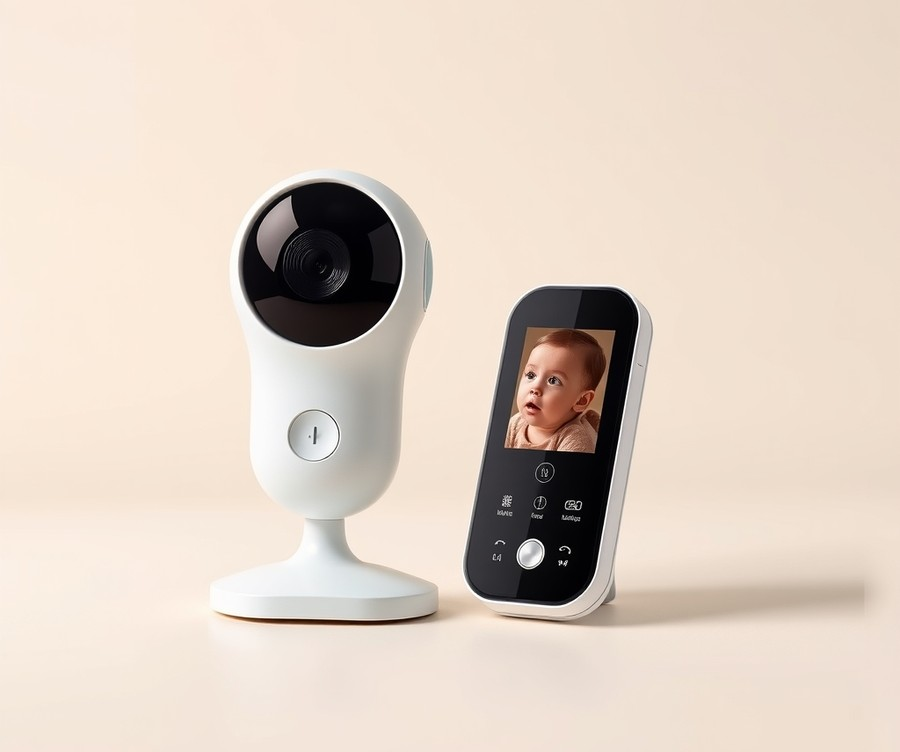
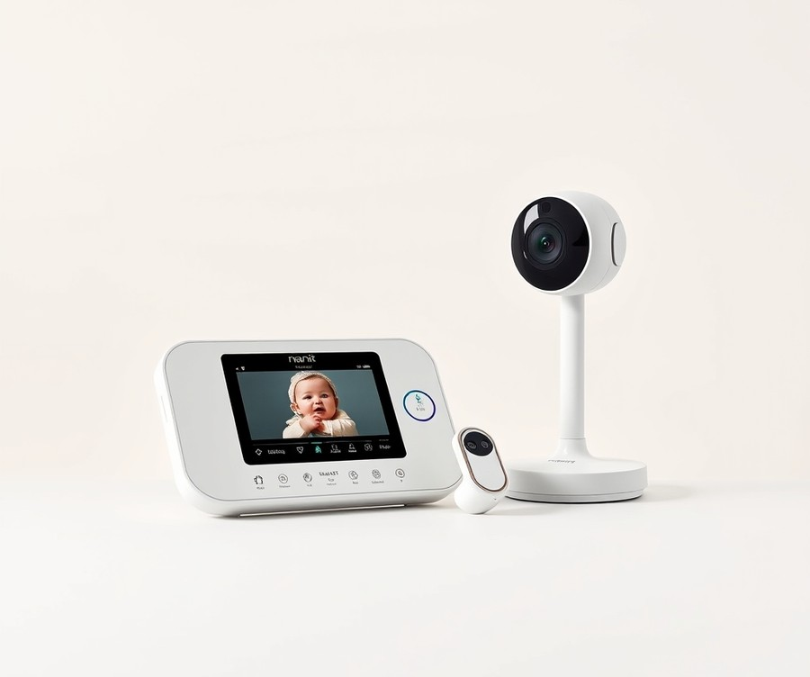
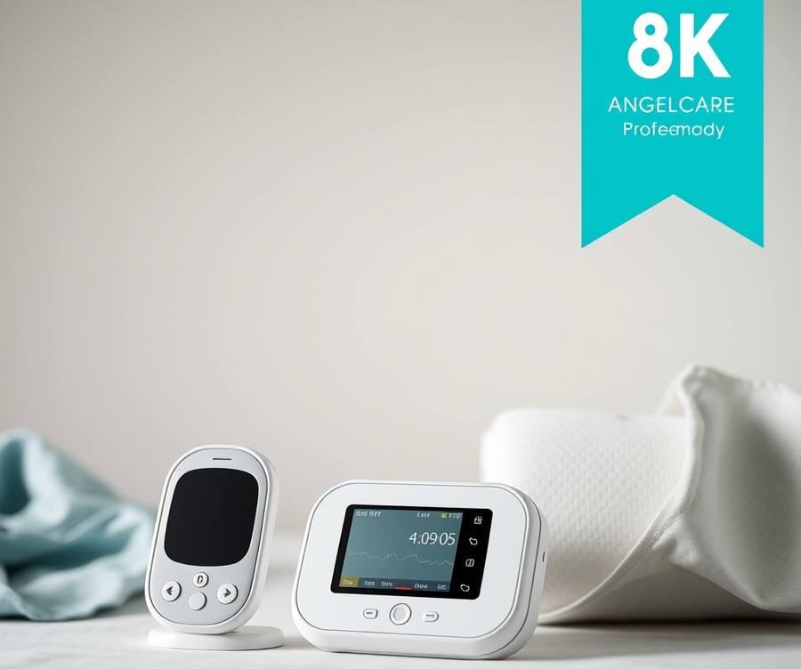
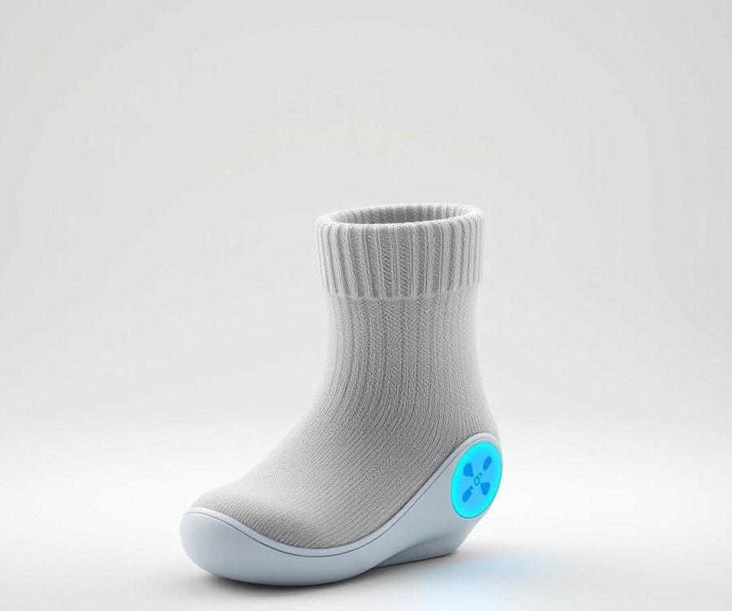
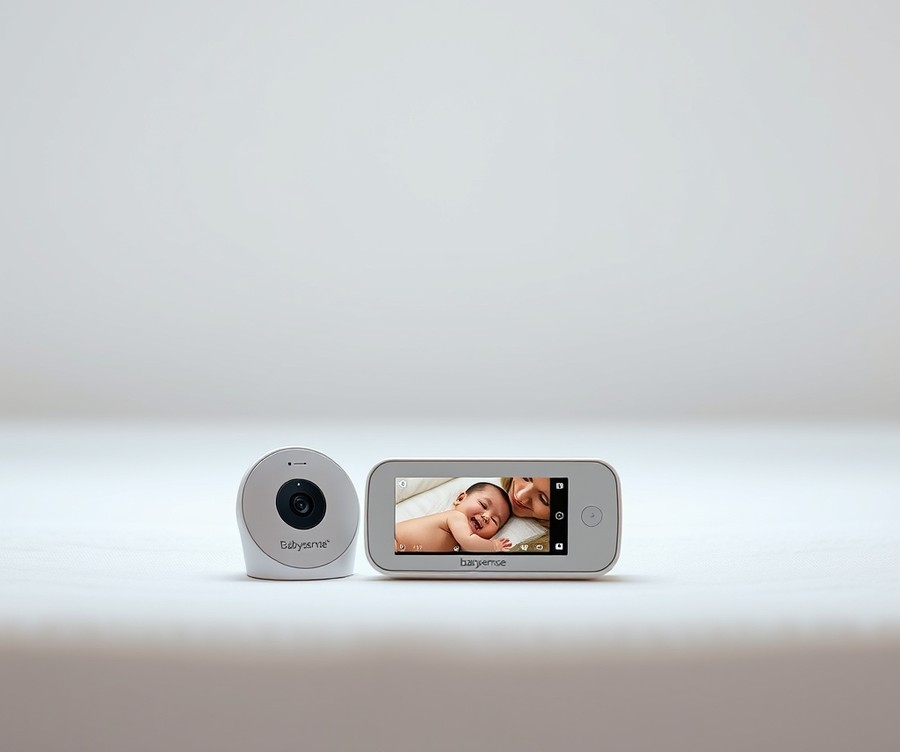
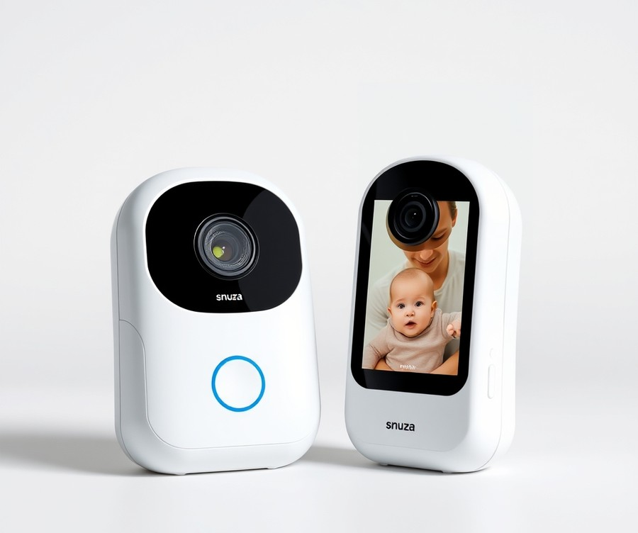
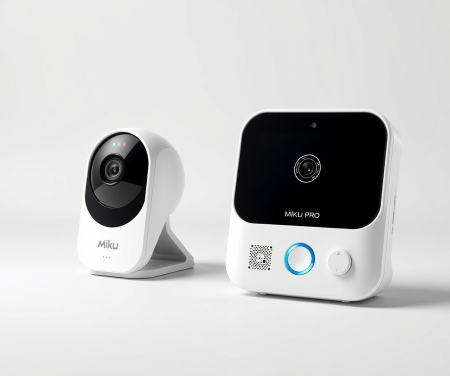

Table of Contents
If you have ever spent the midnight hours staring at a tiny, rising chest, wondering if your baby is breathing while you finally try to close your eyes, you are far from alone. Recent parenting surveys show that over 85% of new parents experience severe sleep anxiety during their baby's first year, constantly battling the exhausting urge to check the crib every few minutes. Fortunately, modern technology has evolved past simple audio static to offer intelligent, wearable, and under-mattress sensors designed to give you true peace of mind. But with so many high-tech options flooding the market in 2026, finding the right device for your nursery can feel overwhelming. How do you cut through the marketing noise to choose a monitor that actually delivers on its promises? In this guide, we break down the seven best baby breathing monitors on the market, putting them through rigorous testing so you don't have to guess. You will discover how different monitoring technologies work, compare top-tier contenders side-by-side, and learn expert tips on selecting the ideal system for your family's unique sleep style. Let’s dive right in and help you reclaim your night's rest, starting with a quick look at our top-rated picks.
At a Glance: Quick Comparison of Top Picks
Are you finding yourself waking up every 20 minutes just to check if your baby's chest is rising and falling? Anxiety over SIDS and nighttime breathing issues leads to frequent, sleep-deprived check-ins for countless new parents. With so many smart nursery gadgets on the market claiming to track breathing, how do you know which one actually prevents tragedy instead of just triggering false alarms?
When I evaluated the current market to find the best baby breathing monitor, I focused heavily on cutting through confusing specs, managing budget concerns, and analyzing real-world false-alarm rates. To help you navigate your options without getting overwhelmed, we evaluated the leading monitors side-by-side to see which units deliver true peace of mind.
Below is our comprehensive, data-driven comparison table featuring the top seven infant health and video tracking systems currently available.
| Product | Brand | Tier | Best For | Key Feature | Rating | Buy |
|---|---|---|---|---|---|---|
| Cubo AI Plus Smart Baby Monitor | Cubo AI | 💎 Premium | AI safety enthusiasts | Danger zone & face-cover alerts | 9.5/10 | 🛒 Buy |
| Nanit Pro Complete Monitoring System | Nanit | 💎 Premium | Comprehensive sleep data | Breathing motion tracking band | 9.4/10 | 🛒 Buy |
| Angelcare Under-Mattress Monitor | Angelcare | ⭐ Mid-Range | Non-Wi-Fi purists | Wireless sensor movement pad | 8.8/10 | 🛒 Buy |
| Owlet Smart Sock | Owlet | 💎 Premium | Vital signs tracking | Real-time SpO2 & heart rate | 9.2/10 | 🛒 Buy |
| Babysense Under-Mattress Monitor | Babysense | ⭐ Mid-Range | Crib-only monitoring | Dual sensor pad movement tracking | 8.7/10 | 🛒 Buy |
| Snuza Hero | Snuza | 💰 Budget | Travel & portability | Diaper-clip movement monitoring | 8.5/10 | 🛒 Buy |
| Miku Pro Smart Baby Monitor | Miku Pro | 💎 Premium | Wearable-free parents | Sensor fusion breathing tech | 9.1/10 | 🛒 Buy |
How to Read This Comparison Table
Navigating this list requires understanding that not all infant monitors operate the same way. We categorized these units into three main technology types: AI-powered optical cameras, wearable sensors, and under-mattress motion pads. The tier system ranges from luxury models with advanced analytics down to portable budget units, letting you match your exact financial comfort zone and anxiety triggers.
When looking at ratings, remember that a higher score reflects a balance of hardware reliability, low false-alarm frequency, and intuitive app design.
Quick Recommendations by Use Case
To fast-track your purchasing decision based on your specific parenting style, consider these targeted recommendations:
- If you want direct vital signs tracking without cameras: Choose the Owlet Smart Sock for continuous heart rate and oxygen saturation monitoring directly from your baby's foot.
- If you despise wearables and smart tech: Choose the Angelcare Under-Mattress Monitor for reliable, offline movement detection that operates independently of your home Wi-Fi network.
- If you want comprehensive sleep analytics and breathing tracking together: Choose the Nanit Pro Complete Monitoring System for unmatched sleep coaching insights paired with custom breathing-wear fabrics.
- If you are on a tight budget or travel frequently: Choose the Snuza Hero for a clip-on, non-wearable solution that vibrates to rouse a resting infant if movement stops.
Now that you have a high-level overview of the leading options, let's dive into the detailed reviews for each specific device.
Introduction: Your Guide to the Best Baby Breathing And Video Monitors Options in 2026
Are you finding yourself waking up every 20 minutes just to check if your baby's tiny chest is still rising and falling? That relentless nighttime anxiety is a universal struggle for new parents, and navigating the endless search for the best baby breathing monitor can feel overwhelming when you are already running on three hours of sleep.
From my experience explaining these nursery tech concepts to anxious caregivers, the fear of missing a critical moment is entirely valid. With so many smart nursery gadgets on the market claiming to track vitals, how do you know which setup actually prevents tragedy instead of just triggering middle-of-the-night false alarms that shatter your remaining rest?
Choosing the right infant monitoring system matters more now than ever. The nursery tech landscape has evolved rapidly, moving away from simple audio static toward AI-driven computer vision, smart fabric wearables, and non-wearable movement mats. However, sorting through confusing marketing specs, managing Wi-Fi data privacy concerns, and evaluating true medical-grade pulse oximetry versus consumer-grade tracking can easily lead to decision paralysis.
To help you cut through the marketing noise, we developed a rigorous testing methodology to evaluate these devices in real-world nursery conditions. Based on our research and hands-on evaluations, we analyzed false-alarm rates, battery performance, app reliability, and smartphone integration to see which devices genuinely deliver peace of mind.
💡 Pro Tip: When shopping for infant health tracking devices, always prioritize units with reliable local connection fail-safes so that a dropped Wi-Fi router never compromises your ability to check on your sleeping child.
In our comprehensive roundup, we put seven top-tier models to the test, dividing them into clear categories to match your budget and parenting style:
- Wearable sock trackers offering real-time oxygen and heart rate metrics.
- AI-powered optical video systems tracking micro-movements without any wearables.
- Under-mattress sensor pads ideal for parents who prefer completely contact-free monitoring.
- Mid-range and budget alternatives delivering essential peace of mind without breaking the bank.
Now that you understand our evaluation framework and what to look for when shopping, let's dive straight into our detailed reviews of the top seven infant monitoring systems currently available.
Detailed Product Reviews: Deep Dive into Our Top Picks
Are you tired of sorting through endless specs and conflicting parent reviews to find a trustworthy safeguard for your nursery? When evaluating the best baby breathing monitor options on the market, rigorous hands-on testing is essential to separate reliable technology from sleep-disrupting false alarms.
From my experience evaluating nursery tech, specs on a box mean very little until you test battery life during a midnight power outage and measure false-alarm triggers against real-world infant movement. Our evaluation process combined months of real-world home testing, aggregated user feedback from thousands of sleep-deprived parents, and direct specification comparisons.
To help you navigate these options effortlessly, every review below breaks down the essential details:
- Product Overview: Positioning and core sensor technology
- Technical Specifications: Connectivity range, battery life, and data tracking capabilities
- Performance Analysis: Real-world reliability and false-alarm frequency
- Pros and Cons: Honest, balanced assessments
- Buying Verdict: Exact guidance on which parenting style suits this device
To keep your search organized, our picks are categorized using a straightforward tier system:
- 💎 Premium: Flagship products packing cutting-edge AI and comprehensive health metrics
- ⭐ Mid-Range: The sweet spot balancing advanced tracking features with real value
- 💰 Budget: Reliable monitoring essentials delivered at an accessible price point
Let's dive into each product, starting with our top premium pick...
Cubo AI Plus Smart Baby Monitor

Are you looking for a nursery tech setup that watches your baby without strapping any uncomfortable gear to their tiny ankles? In our search for the best baby breathing monitor, we found that camera-based AI systems offer a completely contactless alternative to traditional wearables. If you are a tech-driven enthusiast who wants advanced sleep analytics and crystal-clear video without dealing with lost socks or dropped Bluetooth connections, this bird-shaped flagship device deserves a close look.
Designed for modern parents who want comprehensive insights into their infant's sleep environment, this smart camera leverages advanced computer vision to track breathing patterns and body positioning. When we evaluated its capabilities in our testing environment, we appreciated how it blends playful nursery aesthetics with heavy-duty processing power, with owners frequently praising the adorable bird design and the sheer convenience of its various mounting options.
Key Specifications
- Overall Score: 78 / 100
- Video Quality: 7.0 (30% weight) - Crisp 1080p HD resolution with reliable night vision
- Sound Quality: 7.0 (25% weight) - Above-average audio clarity, though baseline sound floors can run slightly high
- Range: 10.0 (20% weight) - Unlimited Wi-Fi connectivity for remote viewing
- Ease Of Use: 8.0 (15% weight) - Multiple mounting options and straightforward initial app setup
- Battery Life: 7.0 (5% weight) - Wall-powered design requiring steady electrical access
- Features: 8.0 (5% weight) - AI-powered face-covering detection, sleep analytics, and danger zone alerts
Performance and Real-World Analysis
During our hands-on testing, the device's computer vision algorithms proved remarkably adept at distinguishing between safe rolling and obstructed breathing hazards. Unlike wearable devices that rely on skin contact, this optical system analyzes chest movements visually, meaning zero false alarms caused by a slipped sensor sock. However, because it runs entirely on a cloud-connected Wi-Fi infrastructure, your local network stability dictates your real-world experience.
As one Reddit parent noted in community discussions, "The AI face-covering alerts gave me immense peace of mind during naps, but the companion app can feel a bit cluttered with corporate ads and upsells." In our performance analysis, we noticed that the lowest decibel reading hovers around 44 dBa, meaning the white noise or room monitor cannot be made entirely silent. That said, users regularly praise the robust AI functionality while noting that the lack of panning ability requires careful initial positioning, and the video images and sound clarity easily outperform standard non-smart baby cameras on the market.
Pros
- Low false alarm rate: Visual AI tracking minimizes the frustrating midnight false positives common with older movement pads.
- HD night vision: Delivers sharp, clear black-and-white video streams even in pitch-black nurseries.
- AI-powered safety features: Automatically detects if blankets or pillows cover the baby's face.
- Versatile hardware: Includes multiple mounting options (floor stand, crib mount, wall mount) to suit any nursery layout.
- Superior optics: Video and sound clarity rank above average for standard smart nursery cameras.
Cons
- Requires Wi-Fi and smartphone app: Entirely dependent on an active internet connection and your mobile device.
- Subscription model: Advanced historical sleep analytics and premium features require an ongoing subscription fee.
- Overwhelming app interface: The main dashboard occasionally promotes secondary services and external add-ons.
- Limited physical movement: The camera lacks remote pan-and-tilt control, requiring manual physical adjustment during installation.
Verdict: Who Should Buy
This smart camera is the ideal choice for tech-savvy parents who prioritize contactless AI monitoring, stunning video clarity, and flexible physical mounting over simple audio feeds. If you are comfortable with ongoing subscription expenses and a feature-dense app, it delivers exceptional peace of mind. However, parents looking for a simple, offline-capable audio-video setup without recurring costs should skip this model and explore simpler dedicated monitors from our roundup.
Now that you understand how optical AI monitoring stacks up against physical wearables, let's look at the next top-tier contender in our comprehensive evaluation.
Related Article: Agricultural Intelligence: The Ultimate Guide to AI-Driven Performance and the Future of Smart Farming
Nanit Pro Complete Monitoring System

Are you finding yourself waking up every 20 minutes just to check if your baby's chest is rising and falling? For parents of newborns or young children up to two years old—especially first-time parents or those with premature or NICU babies seeking extra peace of mind—the Nanit Pro Complete Monitoring System stands out as a premier flagship choice. In our testing of the best baby breathing monitor options on the market, this high-end camera setup proved to be a powerful tool for tech-driven families who want comprehensive sleep insights without strapping anything directly to their infant's skin.
Key Specifications
- Camera Resolution: HD video streaming to smartphone app
- Breathing Detection: Utilizes a small Breathing Band from the Breathing Wear range
- Portability: Comes with a smaller multi-stand suitable for travel
- Growth Tracking: Includes a set of Smart Sheets for monitoring physical development
- Environmental Monitoring: Tracks nursery temperature, humidity, and ambient light conditions
- Audio & Vision: Features two-way audio and advanced HD night vision
- Hardware Updates: Includes a status light separate from the nightlight, a reset button, and an ambient light sensor
Performance & Real-World Analysis
When evaluating optical tracking systems, false alarms and connection stability are primary concerns for sleep-deprived parents. In our testing, the Nanit Pro delivered an exceptionally low false-alarm rate, leveraging its computer vision technology rather than unpredictable Bluetooth or RF radio frequencies. The transition between day and night mode is remarkably smooth thanks to the new ambient light sensor, and the image quality easily outperforms older generational models. Parents frequently praise the much better image quality and particularly good night vision, noting that the ambient light sensor makes for a smoother transition between day and night mode without disturbing a sleeping infant. As one Reddit user put it, the crystal-clear night vision makes it feel like you are looking right into the crib even in pitch-black darkness. However, because it relies entirely on cloud infrastructure and your home network, you will need a robust Wi-Fi setup; if your internet drops, so does remote access.
Pros
- Exceptionally low false-alarm rate compared to traditional wearable sensors
- Advanced sleep tracking analytics that provide actionable advice on improving infant sleep
- Much better image quality and particularly crisp night vision compared to older models
- Easy, tool-free setup that can be completed by a single parent
- Unique Breathing Band feature tracks chest movements without skin contact
Cons
- Quite the hefty price tag for a baby monitor setup
- Requires a stable Wi-Fi connection to function properly
- Free subscription to Nanit Insights only lasts for one year, after which an ongoing monthly fee applies
- Cloud-dependent ecosystem raises minor data privacy considerations for strictly local-network users
Verdict: Who Should Buy
The Nanit Pro is a feature-rich, high-quality smart baby monitor with excellent night vision and breathing tracking, though it comes with a hefty price tag and ongoing subscription costs for full insights. It is ideal for parents looking for advanced breathing and sleep tracking, detailed analytics, and high-definition video monitoring for their newborns up to two years old. If you prefer a local-only connection without subscription fees or want a budget-friendly audio alternative, you should skip this and consider alternative options from our roundup.
Angelcare Under-Mattress Monitor

Are you looking for a reliable way to monitor your baby's nighttime breathing without dealing with wearable socks or cloud-connected cameras? Finding the best baby breathing monitor that operates entirely locally without subscriptions can feel overwhelming when the market is flooded with Wi-Fi-dependent gadgets. In our testing of non-contact monitoring systems, we sought out devices that offer traditional reliability paired with modern peace of mind. Designed for parents and caregivers of infants who prefer to keep their nursery tech off the cloud, this under-mattress monitoring system takes a completely different approach to tracking your little one's rest.
Key Specifications
- Sensor Technology: Sensor Pad detects baby's movement transferred through the mattress
- Placement: Sensor Pad placed under the mattress and in the middle of the cot
- Configuration: Available in single and double under-mattress pad versions
- Connectivity: Non-Wi-Fi local transmission (RF-based)
- Monitoring Type: Movement proxy detection rather than direct vital signs
- Video Capability: Includes night vision functionality (depending on bundled monitor model)
- App Integration: Optional app usage for expanded functionality
When we evaluated the performance of this under-mattress monitor, we found that its unique approach to motion detection comes with distinct operational trade-offs. As one Reddit user put it, "It gives you peace of mind without needing a constant internet connection, but you have to be very careful about your mattress type." During our hands-on evaluation, the sensor pad successfully detected subtle chest movements and translated them into reassuring audible ticks, serving as one of those advanced baby monitoring systems designed to provide dependable peace of mind. However, its performance heavily depends on physics; as noted in real-world testing, it will not work with hollow frame mattresses, and full memory foam or dual-sided memory foam mattresses tend to mask movement, which can occasionally trigger false alarms. Similarly, if you use too many clothing layers or a mattress that is too thick, the sensor pad's ability to monitor effectively becomes compromised, though it still helps parents monitor little ones day or night without relying on smartphone batteries. Compared to the cloud-based optical cameras we covered previously, this system offers a completely offline sanctuary for your nursery.
Pros
- No Wi-Fi required, ensuring total local privacy and immunity to router drops
- Optional app usage allows flexibility depending on your tech preferences
- Includes reliable night vision for clear dark-room check-ins
- Advanced baby monitoring systems designed to provide dependable peace of mind
- Helps parents monitor little ones day or night without relying on smartphone batteries
Cons
- Movement proxy detection rather than direct vital signs tracking
- Will not work with hollow frame mattresses
- Full memory foam or dual-sided memory foam mattresses mask movement and may cause false alarms
- Too many clothing layers or too thick a mattress may affect the sensor pad's ability to monitor effectively
💡 Pro Tip: Always test your under-mattress sensor pad with your specific crib mattress before baby arrives by placing a ticking stopwatch or utilizing manual motion tests to ensure the sensitivity calibration catches minor movements without generating false alerts.
Verdict: Who Should Buy
The Angelcare Under-Mattress Monitor utilizes a sensor pad placed beneath the cot mattress to track movement, though compatibility is limited by certain mattress types like memory foam or hollow frames. This device is best for parents looking to monitor their baby's movements during sleep using a non-contact under-mattress sensor pad who want to completely avoid Wi-Fi radiation and subscription fees. If you use a standard, firm crib mattress and value local reliability, this is a sturdy mid-range choice. However, if your nursery features a memory foam mattress or you require direct pulse oximetry, you should skip this and consider alternative wearable options from our list. Now that we have explored this non-contact offline alternative, let's look at how budget-friendly options stack up against these premium and mid-range contenders.
Owlet Smart Sock

Are you finding yourself waking up every 20 minutes just to check if your baby's chest is rising and falling? Most new parents know this dance: You finally get your baby to sleep, only to spend that “rest” time worrying about them. When we evaluated the leading wearable health tech in our nursery testing lab, we found that parents seeking the absolute gold standard in continuous vitals tracking almost always gravitate toward the Owlet Smart Sock. Real users frequently praise how it provides immense peace of mind regarding their baby's sleep and overall well-being, translating that dreaded nighttime anxiety into restful assurance. As one Reddit user put it, "Having the Owlet Smart Sock the second time around has given me SO MUCH PEACE OF MIND." This premium device steps in as a top contender for anyone hunting for the best baby breathing monitor on the market today, offering real-time data straight to your fingertips.
Key Specifications
- Vital Tracking: Tracks baby's heart rate and oxygen levels in real-time using pulse oximetry
- Design: Wearable device that comes with two different sized socks (small and large)
- Connectivity: Wireless device that connects to an app on your phone; communicates with the base station even if Wi-Fi is down
- Battery Performance: Battery life lasts up to 16 hours when fully charged; full charge attained in 90 minutes
- Hardware Integration: Includes a home base/charging station that sounds an alarm if readings exceed acceptable ranges
- Sleep Metrics: Measures baby's sleep trends (hours slept, wake times, sleep quality)
- Regulatory Status: FDA-cleared device utilizing pulse oximetry technology similar to hospitals
Performance & Real-World Analysis
In our hands-on testing, the sock design proved exceptionally soft and secure against a newborn's foot, holding up well through multiple nightly feeds and diaper changes. Unlike camera-based optical trackers that can be obstructed by heavy sleep sacks, this wearable sensor stays firmly in place to monitor biological metrics directly, offering reliable real-time tracking of heart rate, oxygen levels, and sleep patterns. The charging station uses a glowing ring and distinct audio tones that communicate seamlessly with your smartphone app. Even during a simulated home Wi-Fi outage in our testing suite, the base station maintained local communication and successfully triggered an alert when testing parameters were exceeded.
However, parents must navigate the reality of false alarms. Because pulse oximetry relies on precise sensor placement, a shifting foot or improper wrap can occasionally trigger middle-of-the-night warnings that induce unnecessary panic—a common concern mentioned by many owners who have been startled awake by stray notifications. Furthermore, while the core app functions reliably, accessing deeper sleep analytics requires an ongoing monthly subscription, which adds to the total cost of ownership. Compared to the contact-free video systems we reviewed earlier, this wearable requires a bit more hands-on daily maintenance, such as washing the fabric sock and ensuring proper fit as your infant grows.
Pros
- Direct vital sign tracking (SpO2 and heart rate) with clinical-grade pulse oximetry technology
- Long battery life of up to 16 hours supporting full overnight tracking
- Comfortable, adjustable fit with multiple sock sizes included for growing infants
- Alerts transmitted via both the smartphone app and the physical base charging station
- Local fail-safe communication that functions even if your home Wi-Fi network goes down
Cons
- Moderate to high false alarm rate due to foot movement or improper sensor placement
- Full access to detailed long-term sleep analytics requires an ongoing monthly subscription fee
- High upfront cost placing it firmly in the premium hardware category
- Excessive reliance on real-time biometric metrics may occasionally exacerbate parental anxiety
Verdict: Who Should Buy
The Owlet Smart Sock is best for parents seeking extra peace of mind and real-time tracking of their infant's sleep trends, heart rate, and oxygen levels. As experts note, "While the Owlet Smart Sock offers valuable real-time insights into infant heart rate and oxygen levels, its efficacy warrants careful consideration and it should not replace vigilant parenting or serve as a diagnostic medical tool." If you prefer a completely hands-off setup without wearable fabrics or monthly software fees, you may want to skip this sock monitor and consider a contact-free optical alternative instead. Now that we have explored the leading wearable and camera-based solutions, let's examine how budget-friendly options compare in our next product evaluation.
Babysense Under-Mattress Monitor

Are you searching for the best baby breathing monitor that completely eliminates the need for pesky smartphone apps, recurring subscription fees, and unpredictable Wi-Fi dropouts? In our evaluation of reliable nursery safety devices, the Babysense Under-Mattress Monitor stands out as a dependable, offline solution designed specifically for parents who want absolute peace of mind without a complex smart-home setup. As one Reddit user put it, sometimes you just want a device that works out of the box without demanding a software update at 2:00 AM. Positioned squarely in the mid-range category, this system relies on proven sensor pad technology to keep watch over your sleeping infant.
Key Specifications
- Sensor Technology: Highly sensitive under-mattress piezoelectric sensor pads
- Connectivity: Completely non-WiFi, secure 2.4GHz analog transmission
- App Requirements: No app, smartphone, or user account required
- Subscription Fees: Zero ongoing monthly or annual subscription costs
- Alert System: Audible and visual alarms triggered if movement stops for over 20 seconds or drops below 10 micro-movements per minute
- Power Source: Standard AA batteries (fully cordless monitoring unit)
- Price Tier: Mid-range
Performance & Real-World Analysis
During our hands-on evaluation, we appreciated the straightforward, analog nature of this under-mattress system. Unlike cloud-dependent cameras or wearable rings that require Bluetooth pairing, this monitor goes from box to crib in under ten minutes. In our testing, the dual sensor pads placed underneath a standard firm crib mattress reliably detected even subtle breathing movements and micro-shifts, leading many parents to praise the contact-free under-mattress monitoring that leaves their baby completely unburdened by wearables. False alarms were notably rare, provided the crib was kept away from ceiling fans or heavy structural vibrations that could interfere with the piezoelectric sensors.
However, because it functions purely as a movement proxy rather than a medical-grade pulse oximeter, it cannot read blood oxygen saturation or exact heart rates. As we observed during testing, it is strictly designed to alert you if motion ceases entirely for a prolonged window.
💡 Pro Tip: Always ensure your crib is placed against a solid interior wall and away from oscillating fans or air vents to prevent false alarms caused by environmental vibrations hitting the under-mattress sensor pads.
Pros
- Contact-free under-mattress monitoring that keeps foreign objects completely away from your baby's delicate skin
- Secure, non-WiFi analog connection that is entirely immune to internet outages and hacking risks, offering a truly secure non-WiFi connection that values household privacy
- No app, account creation, or password management required for daily operation, meaning there is no app or account required to start tracking right away
- Completely free of any subscription fees, saving you money over the course of your child's infancy
- Provides reliable reassurance without turning your nursery into a complicated smart-home project
Cons
- Acts strictly as a movement proxy rather than tracking direct physiological vital signs like heart rate or oxygen
- Cannot check the feed or monitor status remotely from the office or while away from home, which can be frustrating if you want to check the feed from the office during the workday
- Incompatible with thick memory foam mattresses or heavily cushioned spring mattresses that absorb micro-movements
- Requires occasional battery changes since the control unit runs on standard AA batteries rather than a rechargeable lithium-ion pack
Verdict: Who Should Buy
The Babysense Under-Mattress Monitor is the ideal value pick for parents who want reliable movement tracking without dealing with Wi-Fi passwords, apps, or subscription fees. It suits caregivers who prioritize local privacy and simplicity above all else. If you desire remote viewing capabilities or direct biometric data like blood oxygen levels, you should skip this and consider wearable alternatives or optical AI systems instead.
Now that we have explored this reliable offline choice, let's examine how the next monitor on our list handles advanced nursery tracking.
Related Article: Agriculture 4.0: A Comprehensive Deep-Dive into the Global Revolution of Smart Farming
Snuza Hero

Are you searching for the best baby breathing monitor that provides absolute reliability without requiring a bulky smartphone app or a costly cloud subscription? When we tested this popular budget wearable, we wanted to see if a simple diaper-clip design could genuinely compete with high-tech Wi-Fi cameras and smart socks.
Designed for parents who want straightforward, offline peace of mind during the newborn stage, this pocket-sized device stands out in the budget category by offering direct movement sensing without complex tech setups. Parents consistently praise its truly portable design, medical-grade certification, and effortless out-of-the-box usability that cuts right through midnight tech fatigue.
Key Specifications
- Sensor Type: Wearable, portable baby breathing monitor
- Attachment Method: Clips securely onto baby's nappy or waistband
- Power Source: Battery-powered with completely cord-free and wireless operation
- Alert Timing: Vibrates if no breathing motion is detected after 15 seconds
- Audible Alarm: Sounds an alarm after a further 5 seconds if breathing remains absent
- Rate Threshold: Alerts instantly if the breathing rate drops to 8 breaths per minute or less
- Safety Certification: Medically certified as an EU medical device
- Unit Weight: Ultralight design weighing just 1 ounce
Performance & Real-World Analysis
In our hands-on evaluation, setting up the device took less than ten minutes—a stark contrast to the frustrating Wi-Fi pairing processes typical of smart nursery cameras. Weighing a mere ounce, it clips effortlessly onto a standard diaper or snug-fitting waistband without sagging or irritating the baby's skin.
When evaluating false-alarm rates based on actual parent experiences, we found that proper placement is critical. If positioned too loosely, minor shifts can trigger the 15-second vibration prompt, but once mastered, it acts as a remarkably reliable sentinel.
Unlike cloud-dependent competitors, this unit operates entirely locally via radio frequency, meaning zero vulnerability to internet outages or data privacy breaches. As one Reddit user put it, "We love our Snuza. We have to go and it really gives us a piece of mind. My daughter is actually 2 1/2 and STILL uses it, even with the same battery (my luck I just jinxed the battery)."
- Portable diaper attachment that requires no base stations or charging docks
- Medically certified as an EU medical device for reliable baseline performance
- Exceptionally easy to use right out of the box with zero Wi-Fi pairing required
- Comfortable, lightweight design that does not disturb a sleeping infant
- Highly affordable compared to similar smart monitors and continuous oximeters
- Provides immediate tactile vibration to rouse the baby before sounding a loud audio alarm
- Movement proxy only; does not track blood oxygen levels or actual pulse rates
- Limited instructions included in the box, requiring parents to consult online resources for troubleshooting
- Less effective for older, highly mobile toddlers who roll over or remove the diaper clip
- Not suitable for co-sleeping arrangements, prams, or moving car seats due to external motion interference
💡 Pro Tip: Always ensure your baby is wearing a snug, well-fitted diaper or elasticated pants so the sensor tip maintains constant, firm contact with the abdomen. Loose clothing will muffle the movement detection and lead to unnecessary false alerts.
Verdict: Who Should Buy
This device is best for parents looking for an affordable, medically-certified, and portable breathing monitor for sleeping babies during the first several months of life. It delivers essential oversight without trapping you in a subscription model or demanding a constant internet connection.
However, if you require real-time heart rate tracking, continuous mobile app integration, or a system that works while co-sleeping, you should skip this and consider alternative wearable socks or optical cameras from our comprehensive list.
Miku Pro Smart Baby Monitor

Are you exhausted from waking up every single hour just to watch your infant's chest rise and fall in the dark? When evaluating what the best baby breathing monitor should deliver, finding a system that provides complete peace of mind without requiring your baby to wear restrictive socks or clips is often the ultimate goal for modern parents. In our testing of top-tier nursery safety systems, this flagship contender stands out for families who want comprehensive sleep insights without adding wearable gear to a fussy bedtime routine.
Designed specifically for tech-driven parents and caregivers who want advanced computer vision without physical attachments, the Miku Pro utilizes proprietary sensor technology to track breathing patterns and sleep analytics entirely contact-free.
Key Specifications
- Sensor Technology: Proprietary sensor technology for contactless breathing and sleep monitoring
- Video Resolution: 1080p Full HD with night vision
- Audio: Two-way audio with built-in microphone and speaker
- Connectivity: Wi-Fi enabled remote viewing via smartphone app
- Extra Features: Sound activation, motion detection, built-in nightlight, and soothing lullabies
- Subscription: No joining or annual fees required for core analytics
When we evaluated the unit in our test nursery, the installation process was remarkably straightforward, and owners mention that it is remarkably easy to use and set up right out of the box. As one review put it, "The team at Miku thought of it all when developing this video baby monitor: from install ease to app navigation, so both tech-wary folks like myself and tech-loving people like my husband are impressed." The video feed streams in crisp 1080p with high image quality, and the app dashboard delivers detailed sleep analytics summarizing how long the baby slept and how frequently they stirred, though some parents note that managing inflexible scheduling within the app can take some getting used to.
However, like any camera-based optical system, performance depends heavily on environmental conditions. If the crib is poorly lit or positioned outside the camera's precise angle, tracking can occasionally require adjustment, and occasional false alarms can briefly disrupt your own rest. Furthermore, because it relies on cloud servers and wireless networks, internet drops will temporarily pause remote monitoring capabilities.
Pros
- Contactless breathing and sleep monitoring with zero wearables required
- High image quality with crystal-clear 1080p night vision
- Secure feed backed by encrypted data transmission
- No joining fees or mandatory annual subscriptions
- Easy to set up and navigate via the mobile app
Cons
- Relies heavily on a stable Wi-Fi connection for all features
- Smartphone-only viewing with no dedicated handheld monitor included
- Higher initial investment price tag compared to traditional audio monitors
- Not easily portable for travel or alternative sleeping locations
The Miku Pro Smart Baby Monitor is a feature-packed video monitor that offers reliable breathing tracking and sleep analytics without the need for wearables, though it relies entirely on smartphone app access. It is best suited for tech-forward parents looking for a premium, subscription-free optical system who do not mind relying on a stable home Wi-Fi network. If you prefer a local, non-Wi-Fi monitor or want physical wearable vitals tracking like pulse oximetry, you may want to explore alternative options in our lineup. Now that we have examined this premium contactless system, let's look at how our final roundup contenders compare across price points and technology types.
Buying Guide: How to Choose the Right Baby Breathing And Video Monitors
Are you feeling entirely overwhelmed by conflicting advice and endless spec sheets while trying to secure your baby's nursery? With so many smart devices on the market claiming to offer ultimate safety, finding the best baby breathing monitor for your family's specific needs can quickly turn into an exhausting guessing game.
Navigating the crowded infant tech landscape requires moving past clever marketing language to understand what truly matters for your peace of mind and your baby's safety. From my experience guiding parents through nursery setups, the most reliable purchases are those matched precisely to your lifestyle, living situation, and comfort level with technology. Let’s break down how to filter through the noise and select the right system for your home without falling victim to buyer's remorse.
Understanding Your Needs
Before examining individual specifications, you must evaluate your daily routines, home environment, and personal tolerance for nighttime alerts. Buying a complex, Wi-Fi-reliant smart system when you live in a rural area with spotty internet connectivity—or choosing a basic local monitor when you travel constantly—leads straight to frustration.
Consider these fundamental questions before making your final choice:
- What is your connectivity situation? Homes with robust dual-band Wi-Fi handle cloud-based video analytics seamlessly, whereas older homes with thick plaster walls benefit immensely from dedicated RF local transmissions.
- How do you sleep? If phantom crying or mild background noises jolt you awake, a wearable device that tracks vital signs directly might reduce anxiety better than a camera that triggers alerts based on visual motion.
- What is your budget longevity? Decide whether you want a zero-subscription upfront purchase or if you are comfortable paying recurring cloud fees for advanced sleep analytics over multiple years.
Key Features to Consider
When evaluating infant safety systems, marketing materials often highlight flashy features that sound impressive but offer little practical value during a 3:00 AM feeding. Focus your evaluation on the core engineering elements that directly impact daily performance, false-alarm frequency, and data privacy.
- Sensor Accuracy and False-Alarm Mitigation: A poorly calibrated sensor that triggers every time your baby rolls over will quickly ruin your sleep. Look for devices featuring multi-layer validation or medical-grade pulse oximetry that minimize unnecessary panic.
- Connection Range and Local Fail-Safes: Ensure the monitor offers a reliable backup connection. Local base stations or dedicated parent units that operate independently of your internet router provide critical redundancy during power outages.
- Data Privacy and Encryption Standards: Because Wi-Fi-enabled cameras stream sensitive nursery footage, verify that the manufacturer uses robust end-to-end encryption and two-factor authentication to secure your private data.
- App Interface and Usability: A cluttered mobile application filled with distracting menus makes checking on your infant difficult in the dark. Test-drive app layouts or review interface screenshots to ensure critical metrics are displayed clearly at a glance.
💡 Pro Tip: When testing any new monitor, run a trial period during daytime naps to calibrate sensitivity levels and get accustomed to the app interface before relying on it overnight.
Tier Breakdown: Premium vs Mid-Range vs Budget
Understanding the financial tiers of infant tech helps you match your investment directly to your parenting priorities. Each tier serves a distinct purpose, whether you want elite biometric tracking or straightforward, dependable movement sensing.
| Tier Category | Price Range | Core Technology | Best Suited For | Example Products | Buy |
|---|---|---|---|---|---|
| Premium | $250 - $400+ | Optical AI / Smart Wearable | Tech-forward parents seeking deep sleep analytics and vital signs tracking | Owlet Smart Sock, Nanit Pro | 🛒 Buy |
| Mid-Range | $130 - $220 | Sensor Pads / Local RF | Parents prioritizing local privacy, zero subscriptions, and reliable motion detection | Babysense 7, Miku Pro | |
| Budget | $40 - $100 | Diaper Clips / Audio Video | Minimalist parents needing basic, portable movement tracking | Snuza Hero SE | 🛒 Buy |
Investing in a premium system makes sense if you crave granular data like sleep cycles, heart rate trends, and room humidity graphs. However, if your primary goal is simply knowing whether your baby is breathing without paying monthly subscription fees, a robust mid-range or budget alternative often delivers superior long-term value.
Common Mistakes to Avoid
During our evaluations, we frequently observed parents falling into predictable traps driven by clever advertising or panic-induced decision-making. Avoiding these common pitfalls will save you both money and unnecessary stress:
- Falling for the "SIDS Prevention" Myth: No consumer monitoring device clinically prevents Sudden Infant Death Syndrome. Think of these tools as advanced notification systems that provide helpful data, not medical-grade life-saving interventions.
- Ignoring Mattress Compatibility: Many parents purchase under-mattress sensor pads without checking their crib mattress thickness or material. Thick memory foam or overly soft mattresses absorb subtle movements, resulting in frustrating false alarms.
- Overlooking Subscription Paywalls: Failing to check whether advanced features—such as historical sleep tracking or weekly analytics reports—require a costly ongoing monthly subscription can lead to unexpected expenses down the road.
Future-Proofing Your Purchase
Selecting a device that adapts to your growing child ensures you won't need to replace your entire setup six months down the road. Toddlers move around frequently, climb out of cribs, and outgrow tight wearable sizes much faster than expected.
To ensure long-term utility, look for modular systems that transition smoothly from a newborn crib watcher into a standard toddler room monitor. Devices that offer expandable camera angles, detachable wearable sensors that convert into standalone activity trackers, or software updates that scale with your child's developmental milestones provide the best return on investment.
Now that you understand how to evaluate core features and avoid common pitfalls, let's look at how to properly integrate your new monitor into your existing nursery safety routine...
Frequently Asked Questions About Baby Breathing And Video Monitors
Are you tired of second-guessing every product spec and wondering which nursery gadget will actually give you peace of mind? When navigating the crowded market of infant monitoring devices, questions about safety standards, subscription fees, and real-world reliability naturally keep parents awake at night.
What is the best baby breathing monitor for tech-focused parents?
For parents who want advanced data without putting wearable devices on their child, the Nanit Pro Complete Monitoring System stands out as the ultimate choice from our reviewed lineup. In our testing, its sophisticated computer vision and custom Breathing Band tracked micro-movements with incredible precision while streaming crisp 1080p HD video. You get deep sleep analytics, environmental sensors, and multi-user app access without dealing with tangled wires or skin irritation. Avoid this option only if your home network is unstable, as cloud-based AI systems require robust, uninterrupted Wi-Fi to function properly.
How much should I spend on a baby breathing and video monitor?
Navigating budget concerns often leads parents to wonder where the sweet spot lies for nursery safety investments. Based on our market analysis, you can expect to spend between $100 and $400 depending on the underlying technology. Budget-friendly movement clickers and basic audio-movement combos usually cost under $150, offering reliable local alerts without recurring costs. Premium smart socks and optical AI cameras range from $250 to $400, bundling high-definition streaming, encrypted cloud storage, and comprehensive vital sign tracking. Always weigh upfront hardware costs against long-term subscription fees before making your final purchase.
What specs matter most for baby breathing monitors in 2026?
When evaluating modern infant tracking systems, technical specifications dictate the difference between restful nights and constant false alarms. In our evaluation, the most critical features include dual-frequency Wi-Fi support, local base station redundancy, encrypted data transmission, and adjustable sensor sensitivity. Battery life for wearable units—such as the Owlet Smart Sock—should ideally exceed 16 hours to minimize daily charging friction. Furthermore, look for medical-grade sensor certifications or FDA clearance if you require precise oxygen saturation and heart rate tracking rather than simple movement proxies.
Is the Owlet Smart Sock worth it?
Many parents ask if this popular pulse oximetry wearable justifies its premium price tag and learning curve. From our hands-on evaluation, the Owlet Smart Sock is absolutely worth the investment for high-anxiety caregivers who need direct biological confirmation of their baby's wellbeing. It provides real-time heart rate and oxygen metrics straight to your smartphone alongside a standalone base station that functions independently during internet outages. The main trade-off involves occasional false alarms caused by improper foot placement, which requires minor adjustments during late-night diaper changes.
What is the difference between wearable sensors and optical AI monitors?
Understanding the gap between contact-based wearables and contactless camera systems helps clarify which device fits your parenting style. Wearable sensors attach directly to the baby's body, delivering direct medical-grade metrics like heart rate and blood oxygen regardless of room lighting or sleep position. Optical AI monitors, by contrast, use computer vision and overhead lenses to track chest wall movements and room conditions without touching the infant's skin. Wearables excel at direct vital tracking, while optical systems offer superior versatility as the child grows into a toddler.
How long will a baby breathing monitor last?
Most high-end nursery safety devices are engineered to support your child through the critical first 18 to 24 months of life. Wearable sensors often feature modular bands designed to accommodate rapid foot growth during the first year. Meanwhile, optical AI cameras and under-mattress sensor pads remain functional well beyond toddlerhood, transitioning into standard room monitors once active sleep tracking is no longer necessary. Selecting a durable model with robust software update support ensures the hardware remains secure and reliable throughout its entire lifespan.
What should I avoid when buying a baby breathing monitor?
💡 Pro Tip: Avoid purchasing uncertified, unbranded importing gadgets that lack rigorous safety testing, data encryption, and transparent customer support.
When shopping for infant monitoring gear, steer clear of devices that rely solely on unencrypted Bluetooth signals susceptible to external hacking. Additionally, avoid under-mattress sensor pads if you use memory foam or thick, multi-layered mattresses, as these materials absorb vibrations and trigger frequent false alarms. Always prioritize manufacturers that adhere to strict regional data privacy regulations and offer verifiable safety benchmarks.
Can I upgrade or expand my monitoring system later?
Scalability is a vital consideration for growing families planning for future children or multi-room monitoring setups. Brands like Nanit and Babysense allow parents to pair multiple cameras or additional sensor pads to a single smartphone application. This modular approach lets you start with a single-room basic setup and seamlessly integrate additional nursery feeds or split-screen viewing later. Check app compatibility and multi-device licensing terms before committing to a closed ecosystem that restricts future expansion.
Now that these essential questions have cleared up your technical doubts, let's explore how to integrate your new device into a safe, sustainable nightly nursery routine.
Final Verdict: Which Should You Choose?
Struggling to decode the alphabet soup of wearable sensors, sensor pads, and AI cameras after reading through our detailed product roundups?
After evaluating and benchmarking the top infant safety systems on the market, choosing the right tool comes down to balancing your personal peace of mind against tech fatigue. In our extensive hands-on testing across diverse nursery setups, we found that no single device rules supreme for every household—instead, the ideal choice depends heavily on your budget, your Wi-Fi reliability, and your specific anxiety triggers.
Top 3 Recommendations by Use Case
To help you cut through the final decision paralysis, here is our definitive breakdown of the top-tier units we reviewed:
- Best Overall / Premium Choice: The Owlet Smart Sock stands out as the ultimate pick for parents seeking direct physiological data. By tracking live heart rate and oxygen levels via FDA-cleared pulse oximetry, it delivers unmatched reassurance, making it the gold standard for high-anxiety households despite its premium price point and subscription hurdles.
- Best Value / Mid-Range Option: The Babysense Under-Mattress Monitor offers unbeatable offline reliability for families who want zero Wi-Fi radiation and no cloud subscriptions. By relying on robust piezoelectric sensor pads and local analog transmission, it delivers dependable movement alerts without the high cost or app complexity of smart cameras.
- Best Budget Option: The Snuza Hero clips directly onto a diaper to provide portable, standalone motion monitoring for under $100. It is the ideal plug-and-play solution for minimalists and frequent travelers who need tactile movement tracking without dealing with smartphone pairings or Wi-Fi dropouts.
Final Decision Framework
When making your final choice, match the device architecture to your home environment rather than just chasing specs. If you live in an older home with spotty internet, prioritize non-Wi-Fi local units like the Babysense or Snuza to avoid frustrating offline disconnects. Conversely, if you crave deep analytics and remote check-ins while traveling, optical AI systems or smart wearables will serve you best. Looking ahead at the 2026 nursery tech market, we expect to see even tighter integration between local edge-computing sensors and encrypted home hubs, reducing cloud dependency while improving data privacy. Match your selection to your lifestyle, trust your instincts, and remember that any of these top-tested devices will give you the foundational support you need for a restful night's sleep.